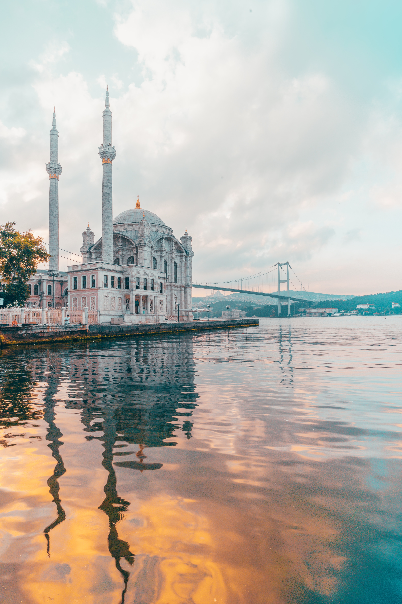

Snapshots of History

Bosphorous

Topkapi Palace

Maiden's Tower

Hagia Sophia
Galata Tower
Istanbul was once home to the Byzantine/Roman and Ottoman Empires, and its architecture illustrates
the diversity of culture and religion within these two powerful leaderships.
- The Topkapi Palace served as the administrative center of the Ottoman Empire, and was the main residence of the Ottoman Sultans thorughout the 16th century. Its construction began in 1459 and ended in 1856, and its colossal size and glory reflect this scope of time.
- Similar in architecture, but worth a visit of its own, the Hagia Sophia, which is now a mosque, was initially a church. It was converted to a nonreligious space after becoming a mosque during Ottoman rule, and was recently reverted to a Mosque under Turkey's leadership. The interior displays a diverse aesthetic combinging Christian and Islamic religious figures, with paintings of the Virgin Mary and Baby Jesus, in addition to Arabic scripture from the Quran. Recently restored, this mosque is conveniently located across the street from the Blue Mosque, which has the largest outdoor courtyard of all Ottoman mosques.
- Built as a monument of expansion of the Genoese colony in 1348, the Galata Tower is located in the bustling Karakoy quarter of the European side of Istanbul. It stood as the tallest structure in Istanbul for centuries, and is still visible in Istanbul's skyline. A former watchtower, it is now a site open to tourists, and climbing to the top presents a rewarding view of the beautiful Istanbul skyline.
- Hover over the photographs to add some color to history!
Vote for your favorite historical sites!
Watch to Learn More
This video provides a brief overview of important historical sites and events that took place in the city. The successive capital of the Eastern Roman Empire and the Ottoman Empire, Istanbul has been at
the centre of major political events for more than 2,000 years. The historic peninsula, surrounded by the waters of the Bosphorus, is home to an array of impressive monuments which bestow glory to the city. Nearly every visit starts with a walk through the historic quarter, recognised by
Unesco for the unique architectural masterpieces.